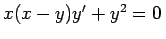
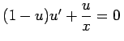
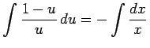
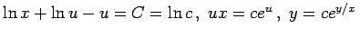

Inhalt Index DeskTop Bronstein

 Differentialgleichungen Gewöhnliche Differentialgleichungen Differentialgleichungen 1. Ordnung Wichtige Integrationsmethoden
Differentialgleichungen Gewöhnliche Differentialgleichungen Differentialgleichungen 1. Ordnung Wichtige Integrationsmethoden


Wenn M(x,y) und N(x,y) homogene Funktionen gleichen Grades sind, dann kann in der Gleichung
| M(x,y)dx+N(x,y)dy=0 | (9.8) |
die Trennung der Variablen durch die Substitution u = y/x erreicht werden.
| Beispiel |
|
. Mit y = u(x)x erhält man . Daraus folgt durch Trennung der Variablen . Somit ist . |